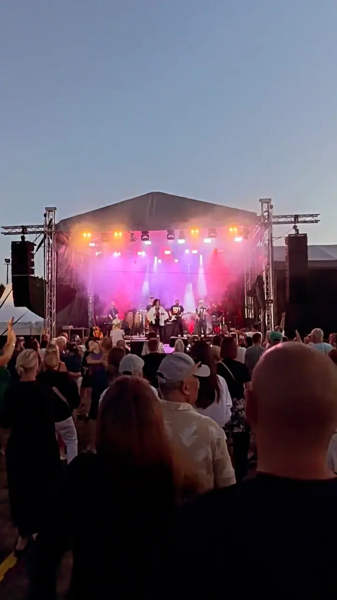
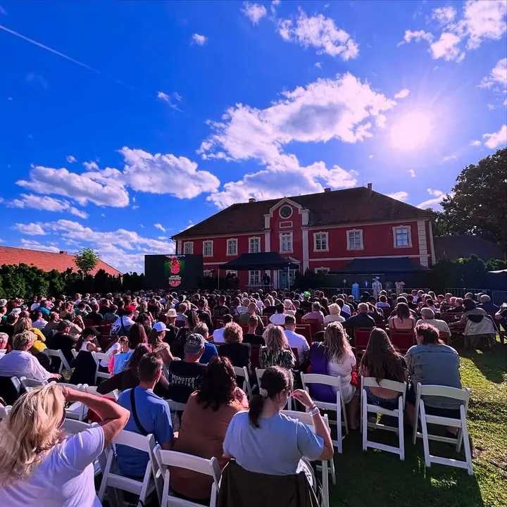
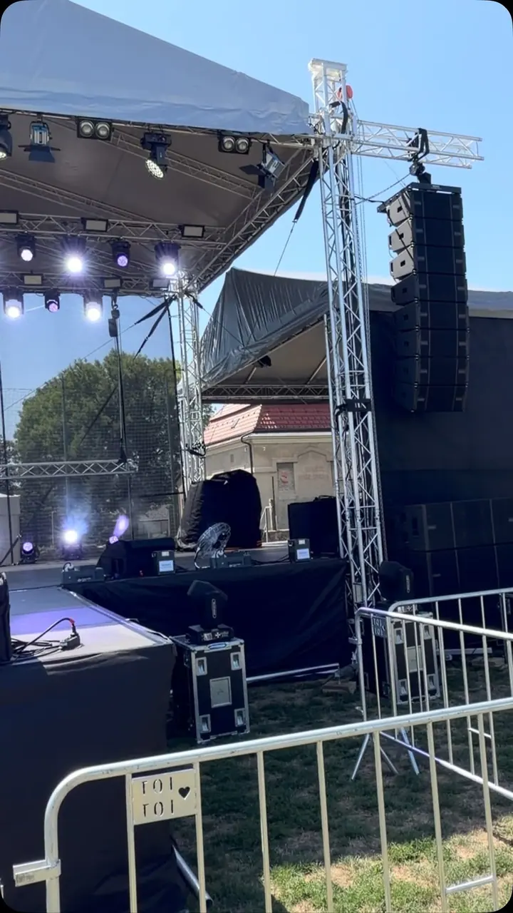
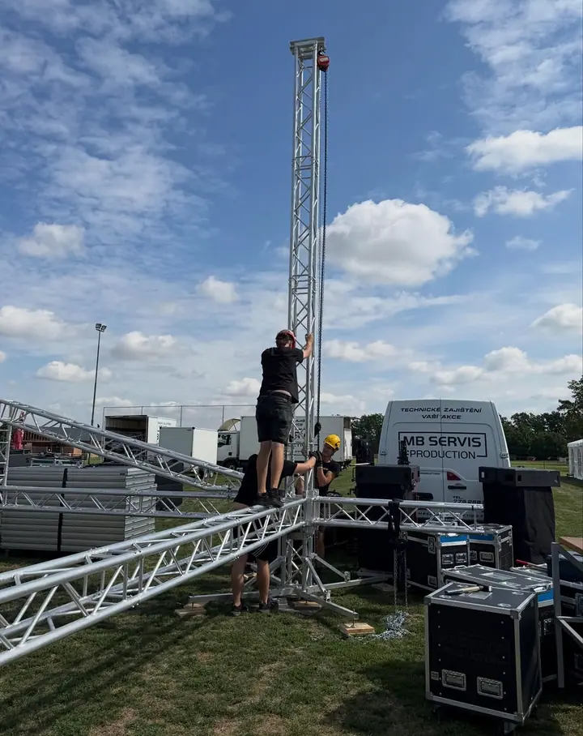

01 / 04
Koncerty a festivaly
Dodáme ozvučení, světla, pódiové konstrukce a LED obrazovky pro koncerty, festivaly i venkovní akce. Naši technici jsou na místě od stavby až po poslední písničku.
Zeptat se na termín→



Zvuk, světla a pódium pro vaši akci
Zeptat se na termín →(01) Ahoj
Jmenujeme se MB Servis Production a z Humpolce zajišťujeme technické zázemí akcí : koncertů, festivalů, maturitních plesů i firemních večírků. Vlastníme zvukovou a světelnou techniku, LED obrazovky i pódiové konstrukce . Fotograf a kameraman s námi zachytí celý večer , aby vám z něj zůstaly vzpomínky.
4 059lidí sleduje mou práci na Instagramu
332příspěvků s fotkami a příběhy
(02) Co fotím
01 / 04
Dodáme ozvučení, světla, pódiové konstrukce a LED obrazovky pro koncerty, festivaly i venkovní akce. Naši technici jsou na místě od stavby až po poslední písničku.
Zeptat se na termín→02 / 04
Pomůžeme vám s plesem od prvních nápadů až po realizaci: ozvučení, světelnou show při nástupu a šerpování, LED obrazovku, výzdobu, fotokoutek i fotografa a kameramana. Připravíme podrobný rozpočet a hlídáme, abychom se ho drželi.
Zeptat se na termín→03 / 04
Půjčíme a dodáme párty stany od 3×3 do 8×12 m, pivní sety, terasové plynové ohřívače, párty stolky i bílé svatební židle. Hodí se pro svatby, oslavy i firemní akce venku.
Zeptat se na termín→Dále nabízím
Firemní akci zajistíme technicky celou, od zvuku a světel přes obraz na LED až po zázemí pro hosty. Rádi pomůžeme i s kreativním konceptem firemního plesu.
↗(04) Postup
Od první zprávy po hotovou galerii.
Krok 1 z 4
Ozvěte se nám a do 24 hodin si zavoláme. Probereme, jakou akci chystáte a co od ní čekáte.
Krok 2 z 4
Pomůžeme s nápadem, tématem i harmonogramem a připravíme podrobný rozpočet se všemi náklady.
Krok 3 z 4
Navrhneme výzdobu na míru, přivezeme techniku a vybavení a na místě vše postavíme a vyzkoušíme.
Krok 4 z 4
Technici hlídají zvuk, světla i LED obrazovku, fotograf a kameraman zachytí program a vy si večer užíváte.
Každá služba na akci musí fungovat na jedničku
(05) Za objektivem
Jsme firma s velkým technickým zázemím a sídlem v Humpolci na Vysočině. Vlastníme kvalitní zvukovou i světelnou techniku, LED obrazovky, na které přenášíme obraz z videokamery nebo vaše fotografie, a k tomu stany, sety a další vybavení na akce venku.
Naši technici jsou parta srdcařů, kteří na místě tvoří sehraný tým. Postavíme pódium, ozvučíme kapelu i moderátora, nasvítíme nástup a postaráme se, aby technika fungovala celý večer. Kompletně jsme zajišťovali například firemní akci pro T-Mobile v roce 2019.
Naše služby jsou flexibilní. Akce je přece o vás, proto stavíme spolupráci na přátelské rovině, s podrobným rozpočtem a klidně i s bláznivými nápady. Vy si večer užijete a starosti necháte na nás.
MB
MB Servis Production · Technické zajištění akcí, foto a video
Nic. Zavoláme si zdarma, a to do 24 hodin od vaší zprávy, a společně projdeme, co vaše akce potřebuje.
Připravíme podrobný rozpočet plesu nebo akce se všemi náklady a během příprav s vámi průběžně dohlížíme, abychom se ho drželi.
Vybereme pozadí k vaší akci a přivezeme rekvizity, fotky se tisknou hned na místě. Pronájem fotokoutku je zdarma, platíte jen vytištěné fotografie.
Ano. V rentalu půjčujeme párty stany od 3×3 do 8×12 m, pivní sety PREMIUM, terasové plynové ohřívače, párty stolky a bílé skládací svatební židle.
(07) Kontakt
Napište pár vět o tom, co si představujete, a termín, který se vám hodí.
info@mbservisproduction.cz